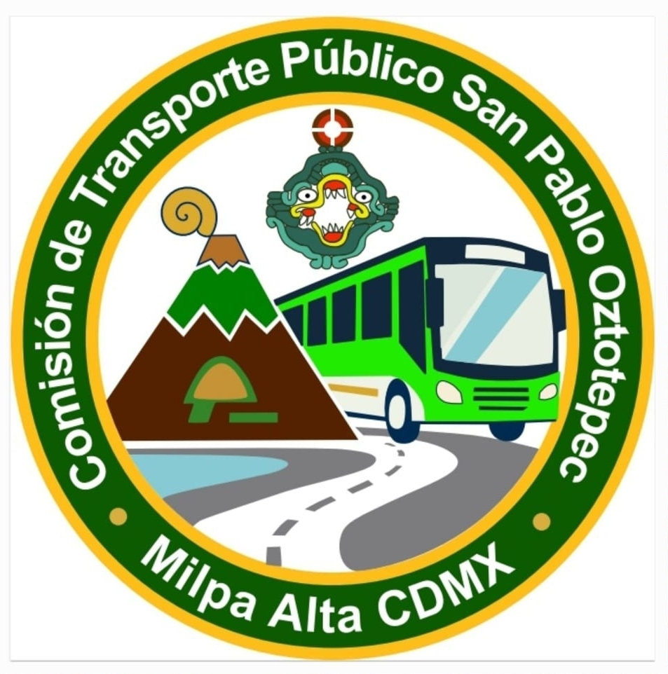

Libera la Vialidad
¡Apoya tu transporte! No te estaciones sobre la línea roja en la avenida. Una vialidad libre nos ayuda a todos.

¡Apoya tu transporte! No te estaciones sobre la línea roja en la avenida. Una vialidad libre nos ayuda a todos.
El servicio de RTP mantiene salidas aproximadas cada 50 minutos
Queremos que sepas que cada volante que recibes, cada lona que ves colgada y cada evento que organizamos, es posible gracias a la cooperación económica y el esfuerzo de los propios vecinos. Ponemos nuestro tiempo y de nuestro bolsillo porque creemos que un mejor transporte dignifica nuestra vida diaria. Cuidar nuestras calles y respetar las reglas es la mejor forma en la que tú también puedes sumarte a este esfuerzo.
Nos juntamos en el Cuartel Zapatista junto con la gente de RTP para platicar de frente con los vecinos. Fue un evento para convivir, escuchar sus dudas y recordar que si cuidamos los camiones y nos apoyamos entre todos, el transporte de nuestro pueblo funciona mucho mejor.
Salimos a repartir volantes y colgamos lonas en la avenida principal para pedirle a la comunidad que nos apoye. El mensaje es sencillo: si evitamos estacionarnos donde está pintado de rojo, los camiones pasan más rápido y todos llegamos más temprano a casa.
Haciendo equipo y organizándonos con los vecinos, logramos poner una caseta y un baño para los operadores de las unidades. Darles un espacio digno a los choferes mejora sus condiciones de trabajo, lo que al final se traduce en un mejor servicio para todos los que usamos la ruta.
Caminamos la ruta de Pozos junto con los directivos de RTP para ver con nuestros propios ojos cómo están las calles. Ubicamos los cuellos de botella en el tráfico y vimos dónde hacen falta señalamientos para que los camiones puedan pasar seguros y sin contratiempos.
Nos sentamos a platicar con los directivos de la Secretaría de Movilidad, el Módulo 3 de RTP y los representantes de las Rutas 100 y 81. El objetivo fue muy claro: ponernos de acuerdo, resolver los problemas de las rutas y asegurar un mejor transporte para todos los vecinos.